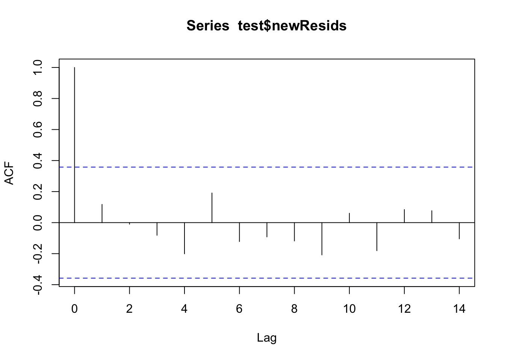

library(tidyverse)
url <- "https://sdsc.osn.xsede.org/bio230014-bucket01/challenges/targets/project_id=neon4cast/duration=P1D/phenology-targets.csv.gz"
phenology_targets <- read_csv(url, show_col_types = FALSE)
phenology <- phenology_targets %>% filter(site_id == "HARV" & variable == "gcc_90")VectorByte Methods Training: Introduction to Time Series Forecasting (practical)
Overview and Instructions
The goals of this practical are to:
Practice setting up data for forecasting
Practice fitting time series models for forecasting
Practice generating forecasts for a given model and evaluating its performance
Learn aggressively…. See the forecasting challenge section below :)
This practical will take you through an example of modeling a terrestrial phenology (how much greenness can be observed from above) data set from NEON and generating forecasts from the best model. Then, we will have the world’s smallest (and fastest) forecasting competition for you to practice your skills via trial by fire, because everyone learns best under pressure! :)
Defining the Goal
Slide 4
The first step of forecasting is to define the forecasting goal - why the heck are you about to spend several hours of your life gathering data and modeling it?? Also, once you know that - how are you going to do it?
This process can sometimes take a really long time (even a year or more) for large forecasting projects. It often involves a team of people who have some kind of stake in the forecasting process or results.
In our case, it will just take however much time you need to read the following sentence. The goals of our forecasting exercise are to (1) Practice the forecasting process and (2) Generate 30 day out forecasts for tree greenness using data provided by the NEON Forecasting Challenge and publicly available weather data.
Getting the Data and Pre-Processing
Slide 5 & 7
This data set originally required some cleaning and wrangling. The version you have NEONphenologyClean.csv is ready to explore and model! However, the cleaning process is shown here in case you ever need to do something like this on your own. **This section is optional to look through.**
Note: there are more automated ways to pull weather data for your future forecasting for better reproducibility, but I ran out of time to make code like that for our use.
The data set was compiled from two separate data sets: the phenology data set for the HARV site from the NEON website and publicly available weather data from a nearby airport retrieved from NOAA’s website.
NOAA Data: phenologyWeather.csv (taken from: https://www.ncei.noaa.gov/cdo-web/)
NEON Phenology Data:
The NEON data set needed some imputation, which was done using a centered moving average approach. A nice package called
imputeTSis available in R to do this kind of imputation quickly. The package contains several more advanced imputation methods as well, but we kept it straightforward for this.library(imputeTS) phenology$update <- na_ma(phenology$observation, k = 6, weighting = "exponential", maxgap = Inf) phenology <- phenology %>% mutate(observation = coalesce(observation, update))The NOAA data needed to be summarized from hourly measurements to daily summaries and lagged predictors were added to the data set as well.
# Read it in from the file
weather <- read.csv("data/phenologyWeather.csv")
# Clean it up and add necessary variables
weather$DATE<- ymd(weather$DATE)
weather$iso_week <- isoweek(weather$DATE)
weather$year <- year(weather$DATE)
weather$iso_week <- as.factor(weather$iso_week)
weather$year <- as.factor(weather$year)
weather$HourlyDryBulbTemperature <- as.numeric(weather$HourlyDryBulbTemperature)
weather$HourlyRelativeHumidity <- as.numeric(weather$HourlyRelativeHumidity)
weather$HourlyPrecipitation <- as.numeric(weather$HourlyPrecipitation)
weather$HourlyWindSpeed <- as.numeric(weather$HourlyWindSpeed)
# Summarize the variables to a daily timescale to match the data set
weatherSum <- weather %>% group_by(DATE) %>%
summarize(meanTemp = mean(HourlyDryBulbTemperature,
na.rm = T),
minTemp = min(HourlyDryBulbTemperature,
na.rm = T),
maxTemp = max(HourlyDryBulbTemperature,
na.rm = T),
meanRH = mean(HourlyRelativeHumidity, na.rm = T),
minRH = min(HourlyRelativeHumidity, na.rm = T),
maxRH = max(HourlyRelativeHumidity, na.rm = T),
totalPrecipitation = sum(HourlyPrecipitation,
na.rm = T),
meanWindSpeed = mean(HourlyWindSpeed, na.rm = T),
maxWindSpeed = max(HourlyWindSpeed, na.rm = T))
## Add one day back lags (you would probably want some others, but we'll keep it simple). The "ungroup()" step here is crucial or the lags will be grouped by date, which makes no sense.
weatherSum <- weatherSum %>% ungroup() %>%
mutate(meanTempLag1 = lag(meanTemp, 1),
minTempLag1 = lag(minTemp, 1),
maxTempLag1 = lag(maxTemp, 1),
meanRHLag1 = lag(meanRH, 1),
minRHLag1 = lag(minRH, 1),
maxRHLag1 = lag(maxRH, 1),
totalPrecipitationLag1 = lag(totalPrecipitation, 1),
meanWindSpeedLag1 = lag(meanWindSpeed, 1),
maxWindSpeedLag1 = lag(maxWindSpeed, 1))- The two cleaned up data sets were merged together.
# Make the date names match for easy merging
phenology$DATE <- phenology$datetime
# Make the full data set!
phenWithWeather <- merge(phenology, weatherSum, by = c("DATE"))Exploring and Visualizing the Data
Slide 6
A simple plot of the time series can go a long way in telling us what kinds of patterns are present. We can already see some strong evidence of seasonality and maybe a slight trend.
# Read in the clean data set
phen <- read.csv("data/NEONphenologyClean.csv")
library(tidyverse) ── Attaching core tidyverse packages ──────────────────────── tidyverse 2.0.0 ──
✔ dplyr 1.1.4 ✔ readr 2.1.5
✔ forcats 1.0.0 ✔ stringr 1.5.1
✔ ggplot2 3.5.0 ✔ tibble 3.2.1
✔ lubridate 1.9.3 ✔ tidyr 1.3.1
✔ purrr 1.0.2
── Conflicts ────────────────────────────────────────── tidyverse_conflicts() ──
✖ dplyr::filter() masks stats::filter()
✖ dplyr::lag() masks stats::lag()
ℹ Use the conflicted package (<http://conflicted.r-lib.org/>) to force all conflicts to become errorsggplot(data = phen, aes(x = DATE, y = observation))+
geom_point() We can explore some of the predictors we have available as well to see if the patterns in the predictors match up. Temperature seems to share a similar seasonal pattern to our variable of interest. Take some time here and explore some of the other predictors to see how they might match up.
ggplot(data = phen, aes(x = DATE, y = meanTemp))+
geom_point() Decomposition plots and autocorrelation plots are also useful tools to help us prepare to fit appropriate forecasting models. In order to make a decomposition plot, we have to formally declare that the data are a time series by turning them into a time series object in R. We do that by using the ts() function. Several of the more basic time series models also require (or at least prefer) data to be in this format. Within the ts() function, we need to specify a frequency. The documentation does a good job of explaining what frequency is:
“Argument frequency indicates the sampling frequency of the time series, with the default value 1 indicating one sample in each unit time interval. For example, one could use a value of 7 for frequency when the data are sampled daily, and the natural time period is a week, or 12 when the data are sampled monthly and the natural time period is a year.”
Given that definition, we can set the frequency here to 365 because the repeating period for trees losing their leaves and greening back up is roughly one year and we have daily observations.
phenTS <- ts(phen$observation, frequency = 365) The decomposition plot shows that there may be a small trend in the series. It also confirms our intuition that seasonality is present.
phenDecomp <- decompose(phenTS)
plot(phenDecomp)The autocorrelation plot shows that there seems to be multiple levels of autocorrelation occurring in the series. On one hand, the series is pretty sticky for nearly 100 days out. On the other hand, the direction of the correlation reverses for certain lags. This also supports the presence of both a trend and seasonal pattern.
acf(phen$observation, lag.max = 365)Partitioning the data
Slide 8
Remember, when your goal is forecasting, data partitioning should not be done randomly. The earlier observations in the data set will be used for training and the remaining observations will be held back as a test set. Generally speaking, it is good to try to match the intended forecasting horizon with the size of the test set. The NEON challenge goal is to forecast at least 30 days out, so we will hold back 30 days of data (i.e. the most recent 30 observations).
There are probably packages out there that can do this for you, so feel free to explore other ways of achieving this kind of partitioning!
n <- nrow(phen)
# The length of the data set minus the most recent 30 days
trainN <- n-30
testN <- trainN+1
# Index the earlier rows for training
train <- phen[1:trainN,]
# Index the later 30 for testing
test <- phen[testN:n,]
nrow(test) # Should be 30[1] 30Modeling - Woot Woot ü•≥
We discussed several kinds of models during the lecture. There are many more model types out there that you may encounter, but this set should get you a good start and will provide you with the foundation you need to continue learning on your own should you need to.
In each section, we will fit the model to the training set, generate forecasts to compare to the test set, and generate RMSE and MAE for each model on its test set performance to evaluate each one and compare them in the next section.
Series Decomposition by Loess + ARIMA or Exponential Smoothing
Slide 22-27 & 40-43
In this approach the time series is first de-trended and de-seasonalized using loess smoothing. Then the remaining stationary series is modeled using ARIMA (or another method if we select a different one). The ARIMA part is fitted via an automated process in the background so we do not have to manually specify p, d, and q. For more information about this process, see the documentation for the auto.arima() function.
If you want to try out exponential smoothing, you will use method = "ETS" and you can specify different model types using etsmodel = "ANN" for example. Other potential models can be found in the lecture slides (e.g. “MNN”, “AAA”, etc.). Note that because we have de-trended and de-seasonalized the series, we do not really need the latter two letters to change from “N”.
First, we have to turn our training data into a time series object like we did with the whole series for plotting.
library(forecast)Registered S3 method overwritten by 'quantmod':
method from
as.zoo.data.frame zoo # STL requires a UNIVARIATE time series object
ts.train <- ts(train$observation, frequency = 365)Below you can see the output for the STL + ARIMA model. The ETS version is commented out here, but you can try it out on your machine.
## There are several options that we can customize in the stl() function, but the one we have to specify is the s.window. Check out the documentation and play around with some of the other options if you would like.
stl.fit <- stlm(ts.train, s.window = "periodic",
method = "arima")
##stl.fit <- stlm(ts.train, s.window = "periodic",
## method = "ets",
## etsmodel = "ANN")
summary(stl.fit$model)Series: x
ARIMA(0,1,3)
Coefficients:
ma1 ma2 ma3
-0.3263 -0.1179 0.0410
s.e. 0.0257 0.0259 0.0263
sigma^2 = 3.873e-05: log likelihood = 5590.98
AIC=-11173.95 AICc=-11173.92 BIC=-11152.63
Training set error measures:
ME RMSE MAE MPE MAPE
Training set 1.262983e-05 0.006215367 0.004032053 -0.01602335 1.078008
MASE ACF1
Training set 0.3462004 0.001065878Let’s look at the residuals to see if there is anything left unaccounted for.
## Check for leftover autocorrelation in the residuals
acf(stl.fit$residuals)
## These models still do assume normal residuals - these look good!
hist(stl.fit$residuals)Now that we are comfortable with the model set up, we can generate forecasts.
## We can generate forecasts with the forecast() function in the forecast package
stl.forecasts <- forecast(stl.fit, h = 30)
## The forecast function gives us point forecasts, as well as prediction intervals
stl.forecasts Point Forecast Lo 80 Hi 80 Lo 95 Hi 95
5.186301 0.4472946 0.4393188 0.4552704 0.4350967 0.4594925
5.189041 0.4531159 0.4434988 0.4627330 0.4384079 0.4678240
5.191781 0.4476411 0.4370512 0.4582309 0.4314453 0.4638368
5.194521 0.4406500 0.4290394 0.4522606 0.4228931 0.4584069
5.197260 0.4452514 0.4327028 0.4578000 0.4260600 0.4644428
5.200000 0.4423128 0.4288916 0.4557340 0.4217868 0.4628388
5.202740 0.4429717 0.4287313 0.4572122 0.4211928 0.4647506
5.205479 0.4375731 0.4225581 0.4525882 0.4146096 0.4605367
5.208219 0.4404230 0.4246714 0.4561746 0.4163330 0.4645130
5.210959 0.4468553 0.4304001 0.4633106 0.4216892 0.4720214
5.213699 0.4412252 0.4240952 0.4583552 0.4150272 0.4674232
5.216438 0.4444451 0.4266659 0.4622242 0.4172542 0.4716359
5.219178 0.4360549 0.4176495 0.4544603 0.4079063 0.4642035
5.221918 0.4397223 0.4207112 0.4587333 0.4106474 0.4687972
5.224658 0.4513696 0.4317716 0.4709676 0.4213971 0.4813422
5.227397 0.4438545 0.4236866 0.4640224 0.4130104 0.4746986
5.230137 0.4433468 0.4226248 0.4640689 0.4116552 0.4750385
5.232877 0.4429392 0.4216774 0.4642011 0.4104220 0.4754564
5.235616 0.4404891 0.4187008 0.4622773 0.4071668 0.4738113
5.238356 0.4491964 0.4268942 0.4714986 0.4150881 0.4833047
5.241096 0.4469288 0.4241242 0.4697334 0.4120521 0.4818054
5.243836 0.4396761 0.4163800 0.4629723 0.4040477 0.4753046
5.246575 0.4386110 0.4148334 0.4623886 0.4022463 0.4749757
5.249315 0.4388684 0.4146189 0.4631178 0.4017821 0.4759547
5.252055 0.4363757 0.4116635 0.4610880 0.3985816 0.4741699
5.254795 0.4401331 0.4149665 0.4652997 0.4016441 0.4786221
5.257534 0.4372529 0.4116401 0.4628658 0.3980814 0.4764244
5.260274 0.4355078 0.4094563 0.4615593 0.3956655 0.4753501
5.263014 0.4369713 0.4104885 0.4634542 0.3964693 0.4774733
5.265753 0.4391473 0.4122400 0.4660546 0.3979962 0.4802985## Notice that it is not straightforward to get the point forecasts out - we have to convert it to a data frame first.
str(stl.forecasts)List of 10
$ method : chr "STL + ARIMA(0,1,3)"
$ model :List of 18
..$ coef : Named num [1:3] -0.326 -0.118 0.041
.. ..- attr(*, "names")= chr [1:3] "ma1" "ma2" "ma3"
..$ sigma2 : num 3.87e-05
..$ var.coef : num [1:3, 1:3] 0.000661 -0.000198 -0.000116 -0.000198 0.00067 ...
.. ..- attr(*, "dimnames")=List of 2
.. .. ..$ : chr [1:3] "ma1" "ma2" "ma3"
.. .. ..$ : chr [1:3] "ma1" "ma2" "ma3"
..$ mask : logi [1:3] TRUE TRUE TRUE
..$ loglik : num 5591
..$ aic : num -11174
..$ arma : int [1:7] 0 3 0 0 365 1 0
..$ residuals: Time-Series [1:1528] from 1 to 5.18: 3.66e-04 -7.76e-05 1.23e-03 4.86e-04 -2.20e-04 ...
..$ call : language auto.arima(y = x, seasonal = FALSE, xreg = xreg, x = list(x = c(0.365520220303196, 0.36543793829309, 0.366717656| __truncated__ ...
..$ series : chr "x"
..$ code : int 0
..$ n.cond : int 0
..$ nobs : int 1527
..$ model :List of 10
.. ..$ phi : num(0)
.. ..$ theta: num [1:3] -0.326 -0.118 0.041
.. ..$ Delta: num 1
.. ..$ Z : num [1:5] 1 0 0 0 1
.. ..$ a : num [1:5] 4.80e-03 2.00e-03 -9.60e-04 9.87e-05 3.71e-01
.. ..$ P : num [1:5, 1:5] 0.00 0.00 0.00 0.00 1.86e-21 ...
.. ..$ T : num [1:5, 1:5] 0 0 0 0 1 1 0 0 0 0 ...
.. ..$ V : num [1:5, 1:5] 1 -0.326 -0.118 0.041 0 ...
.. ..$ h : num 0
.. ..$ Pn : num [1:5, 1:5] 1.00 -3.26e-01 -1.18e-01 4.10e-02 2.67e-22 ...
..$ bic : num -11153
..$ aicc : num -11174
..$ x : Time-Series [1:1528] from 1 to 5.18: 0.366 0.365 0.367 0.367 0.366 ...
..$ fitted : Time-Series [1:1528] from 1 to 5.18: 0.365 0.366 0.365 0.366 0.367 ...
..- attr(*, "class")= chr [1:3] "forecast_ARIMA" "ARIMA" "Arima"
$ level : num [1:2] 80 95
$ mean : Time-Series [1:30] from 5.19 to 5.27: 0.447 0.453 0.448 0.441 0.445 ...
$ lower : Time-Series [1:30, 1:2] from 5.19 to 5.27: 0.439 0.443 0.437 0.429 0.433 ...
..- attr(*, "dimnames")=List of 2
.. ..$ : NULL
.. ..$ : chr [1:2] "80%" "95%"
$ upper : Time-Series [1:30, 1:2] from 5.19 to 5.27: 0.455 0.463 0.458 0.452 0.458 ...
..- attr(*, "dimnames")=List of 2
.. ..$ : NULL
.. ..$ : chr [1:2] "80%" "95%"
$ x : Time-Series [1:1528] from 1 to 5.18: 0.328 0.328 0.329 0.329 0.328 ...
$ series : chr "ts.train"
$ fitted : Time-Series [1:1528] from 1 to 5.18: 0.328 0.328 0.327 0.328 0.328 ...
$ residuals: Time-Series [1:1528] from 1 to 5.18: 3.66e-04 -7.76e-05 1.23e-03 4.86e-04 -2.20e-04 ...
- attr(*, "class")= chr "forecast"stl.df <- as.data.frame(stl.forecasts)Let’s visualize the forecasts! For the basic models available in the forecast package, we can use the plot() function to see a quick time series plot.
# Let's look at the forecasts!
plot(stl.forecasts)Let’s compare them to the observed test series values.
# First make a data frame with both in there
compare <- data.frame(time = seq(1:30),
observed = test$observation,
forecast = stl.df$`Point Forecast`)
# What do you think??
ggplot(data = compare, aes(x = time, y = observed))+
geom_line(color = "blue")+
geom_point(color = "blue")+
geom_line(aes(y = forecast), color = "red")+
geom_point(aes(y = forecast), color = "red")
Finally, we can generate some accuracy metrics and save them in a data frame for later use.
# Last - let's get the RMSE and MAE out. We can use the Metrics package for this. While we're at it, let's save them to a data set for later.
library(Metrics)
Attaching package: 'Metrics'The following object is masked from 'package:forecast':
accuracystl.rmse <- rmse(compare$observed, compare$forecast)
stl.mae <- mae(compare$observed, compare$forecast)
(comparisonDF <- data.frame(model = "stl",
RMSE = stl.rmse,
MAE = stl.mae)) model RMSE MAE
1 stl 0.01162321 0.009048619An additional argument in stlm() exists that allows for the inclusion of extra predictors into an ARIMA-based model post-decomposition. This function requires the predictors to exist in a separate matrix rather than inside of a data frame, which makes it somewhat challenging to use if you are unfamiliar with using matrices in R.
Linear Regression
Slide 29-32
Fortunately, there are several kinds of time series models that accommodate extra predictors in a more intuitive way. The most obvious starting place is linear regression! We have a lot of predictors in our data set to choose from. Feel free to play around with them! For time’s sake, I am going to use mean temperature and its one day lag only. This part is probably not too different from what you are used to doing for non-time series data. The only major difference is in what predictors we choose to include to account for autocorrelation, trend, and seasonality.
# We will start with just our predictors
lm.fit <- lm(observation ~ meanTemp + meanTempLag1,
data = train)
summary(lm.fit)
Call:
lm(formula = observation ~ meanTemp + meanTempLag1, data = train)
Residuals:
Min 1Q Median 3Q Max
-0.108835 -0.017111 0.001229 0.016760 0.090118
Coefficients:
Estimate Std. Error t value Pr(>|t|)
(Intercept) 0.2626627 0.0022072 119.002 <2e-16 ***
meanTemp 0.0011590 0.0001145 10.124 <2e-16 ***
meanTempLag1 0.0011180 0.0001145 9.764 <2e-16 ***
---
Signif. codes: 0 '***' 0.001 '**' 0.01 '*' 0.05 '.' 0.1 ' ' 1
Residual standard error: 0.02741 on 1525 degrees of freedom
Multiple R-squared: 0.6546, Adjusted R-squared: 0.6541
F-statistic: 1445 on 2 and 1525 DF, p-value: < 2.2e-16acf(lm.fit$residuals, 365) # Still a lot of seasonality leftLet’s add the sine and cosine terms we discussed into the data set to include them in the model. We will need to do this for train and test. Note that if you were to be forecasting beyond test, you would need to generate these terms for those time points as well.
# Add to the training set
train$sinSeason <- sin((2*pi*train$X)/365)
train$cosSeason <- cos((2*pi*train$X)/365)
# Add to the testing set
test$sinSeason <- sin((2*pi*test$X)/365)
test$cosSeason <- cos((2*pi*test$X)/365)Back to business! Let’s add in the sine and cosine terms for seasonality.
# Add seasonality via sine and cosine terms
lm.fit <- lm(observation ~ sinSeason + cosSeason + meanTemp +
meanTempLag1,
data = train)
summary(lm.fit)
Call:
lm(formula = observation ~ sinSeason + cosSeason + meanTemp +
meanTempLag1, data = train)
Residuals:
Min 1Q Median 3Q Max
-0.081050 -0.013551 0.003378 0.016710 0.072831
Coefficients:
Estimate Std. Error t value Pr(>|t|)
(Intercept) 0.3531644 0.0049347 71.568 <2e-16 ***
sinSeason 0.0447465 0.0022696 19.715 <2e-16 ***
cosSeason -0.0154489 0.0011013 -14.027 <2e-16 ***
meanTemp 0.0002431 0.0001119 2.172 0.0300 *
meanTempLag1 0.0001918 0.0001119 1.714 0.0868 .
---
Signif. codes: 0 '***' 0.001 '**' 0.01 '*' 0.05 '.' 0.1 ' ' 1
Residual standard error: 0.0244 on 1523 degrees of freedom
Multiple R-squared: 0.7266, Adjusted R-squared: 0.7259
F-statistic: 1012 on 4 and 1523 DF, p-value: < 2.2e-16acf(lm.fit$residuals, 365)Finally, we can add in the trend.
# Add trend
lm.fit <- lm(observation ~ X + sinSeason + cosSeason + meanTemp +
meanTempLag1,
data = train)
summary(lm.fit)
Call:
lm(formula = observation ~ X + sinSeason + cosSeason + meanTemp +
meanTempLag1, data = train)
Residuals:
Min 1Q Median 3Q Max
-0.082566 -0.013092 0.003663 0.016387 0.063609
Coefficients:
Estimate Std. Error t value Pr(>|t|)
(Intercept) 3.465e-01 4.895e-03 70.789 < 2e-16 ***
X 1.164e-05 1.403e-06 8.297 2.33e-16 ***
sinSeason 4.662e-02 2.232e-03 20.884 < 2e-16 ***
cosSeason -1.637e-02 1.083e-03 -15.112 < 2e-16 ***
meanTemp 2.202e-04 1.096e-04 2.010 0.0446 *
meanTempLag1 1.694e-04 1.096e-04 1.546 0.1222
---
Signif. codes: 0 '***' 0.001 '**' 0.01 '*' 0.05 '.' 0.1 ' ' 1
Residual standard error: 0.02388 on 1522 degrees of freedom
Multiple R-squared: 0.7384, Adjusted R-squared: 0.7376
F-statistic: 859.3 on 5 and 1522 DF, p-value: < 2.2e-16# Check for leftover autocorrelation in the residuals - still a lot.
# Stay tuned for how to deal with this! For now we will move forward.
acf(lm.fit$residuals)# These models still do assume normal residuals - these look good!
hist(lm.fit$residuals)Next we’ll generate forecasts for this model.
# We can generate forecasts with the forecast() function in the forecast package
lm.forecasts <- forecast(lm.fit, h = 30, newdata = test)
# The forecast function gives us point forecasts, as well as prediction intervals
lm.forecasts Point Forecast Lo 80 Hi 80 Lo 95 Hi 95
1 0.4265763 0.3958960 0.4572565 0.3796379 0.4735146
2 0.4286415 0.3979637 0.4593193 0.3817068 0.4755761
3 0.4298292 0.3991522 0.4605061 0.3828959 0.4767625
4 0.4295394 0.3988597 0.4602191 0.3826018 0.4764769
5 0.4285087 0.3978253 0.4591920 0.3815655 0.4754518
6 0.4300729 0.3993812 0.4607646 0.3831171 0.4770288
7 0.4337247 0.4030231 0.4644262 0.3867538 0.4806956
8 0.4348493 0.4041528 0.4655458 0.3878861 0.4818125
9 0.4350253 0.4043367 0.4657138 0.3880742 0.4819763
10 0.4348475 0.4041593 0.4655356 0.3878971 0.4817979
11 0.4333377 0.4026513 0.4640242 0.3863899 0.4802856
12 0.4336375 0.4029566 0.4643184 0.3866982 0.4805769
13 0.4348544 0.4041768 0.4655320 0.3879201 0.4817887
14 0.4359595 0.4052789 0.4666402 0.3890205 0.4828985
15 0.4376019 0.4069138 0.4682900 0.3906515 0.4845523
16 0.4370947 0.4064009 0.4677886 0.3901356 0.4840539
17 0.4350371 0.4043475 0.4657267 0.3880844 0.4819898
18 0.4350350 0.4043494 0.4657207 0.3880884 0.4819817
19 0.4377471 0.4070499 0.4684442 0.3907829 0.4847112
20 0.4379329 0.4072393 0.4686266 0.3909741 0.4848917
21 0.4371022 0.4064218 0.4677826 0.3901636 0.4840408
22 0.4379258 0.4072451 0.4686064 0.3909868 0.4848647
23 0.4389425 0.4082622 0.4696228 0.3920040 0.4858809
24 0.4403174 0.4096319 0.4710030 0.3933710 0.4872639
25 0.4414457 0.4107581 0.4721334 0.3944961 0.4883954
26 0.4413800 0.4106927 0.4720672 0.3944309 0.4883290
27 0.4412094 0.4105261 0.4718927 0.3942664 0.4881524
28 0.4416591 0.4109746 0.4723435 0.3947143 0.4886039
29 0.4422830 0.4115963 0.4729697 0.3953348 0.4892312
30 0.4427546 0.4120662 0.4734429 0.3958038 0.4897053# Notice that it is not straightforward to get the point forecasts out - we have to convert it to a data frame first.
str(lm.forecasts)List of 11
$ model :List of 14
..$ coefficients : Named num [1:6] 3.46e-01 1.16e-05 4.66e-02 -1.64e-02 2.20e-04 ...
.. ..- attr(*, "names")= chr [1:6] "(Intercept)" "X" "sinSeason" "cosSeason" ...
..$ residuals : Named num [1:1528] -0.0201 -0.0215 -0.0227 -0.022 -0.0225 ...
.. ..- attr(*, "names")= chr [1:1528] "1" "2" "3" "4" ...
..$ effects : Named num [1:1528] -14.6653 -0.0223 1.471 0.525 0.0881 ...
.. ..- attr(*, "names")= chr [1:1528] "(Intercept)" "X" "sinSeason" "cosSeason" ...
..$ rank : int 6
..$ fitted.values: Named num [1:1528] 0.348 0.349 0.351 0.351 0.35 ...
.. ..- attr(*, "names")= chr [1:1528] "1" "2" "3" "4" ...
..$ assign : int [1:6] 0 1 2 3 4 5
..$ qr :List of 5
.. ..$ qr : num [1:1528, 1:6] -39.0896 0.0256 0.0256 0.0256 0.0256 ...
.. .. ..- attr(*, "dimnames")=List of 2
.. .. .. ..$ : chr [1:1528] "1" "2" "3" "4" ...
.. .. .. ..$ : chr [1:6] "(Intercept)" "X" "sinSeason" "cosSeason" ...
.. .. ..- attr(*, "assign")= int [1:6] 0 1 2 3 4 5
.. ..$ qraux: num [1:6] 1.03 1.04 1 1.04 1.01 ...
.. ..$ pivot: int [1:6] 1 2 3 4 5 6
.. ..$ tol : num 1e-07
.. ..$ rank : int 6
.. ..- attr(*, "class")= chr "qr"
..$ df.residual : int 1522
..$ xlevels : Named list()
..$ call : language lm(formula = observation ~ X + sinSeason + cosSeason + meanTemp + meanTempLag1, data = train)
..$ terms :Classes 'terms', 'formula' language observation ~ X + sinSeason + cosSeason + meanTemp + meanTempLag1
.. .. ..- attr(*, "variables")= language list(observation, X, sinSeason, cosSeason, meanTemp, meanTempLag1)
.. .. ..- attr(*, "factors")= int [1:6, 1:5] 0 1 0 0 0 0 0 0 1 0 ...
.. .. .. ..- attr(*, "dimnames")=List of 2
.. .. .. .. ..$ : chr [1:6] "observation" "X" "sinSeason" "cosSeason" ...
.. .. .. .. ..$ : chr [1:5] "X" "sinSeason" "cosSeason" "meanTemp" ...
.. .. ..- attr(*, "term.labels")= chr [1:5] "X" "sinSeason" "cosSeason" "meanTemp" ...
.. .. ..- attr(*, "order")= int [1:5] 1 1 1 1 1
.. .. ..- attr(*, "intercept")= int 1
.. .. ..- attr(*, "response")= int 1
.. .. ..- attr(*, ".Environment")=<environment: R_GlobalEnv>
.. .. ..- attr(*, "predvars")= language list(observation, X, sinSeason, cosSeason, meanTemp, meanTempLag1)
.. .. ..- attr(*, "dataClasses")= Named chr [1:6] "numeric" "numeric" "numeric" "numeric" ...
.. .. .. ..- attr(*, "names")= chr [1:6] "observation" "X" "sinSeason" "cosSeason" ...
..$ model :'data.frame': 1528 obs. of 6 variables:
.. ..$ observation : num [1:1528] 0.328 0.328 0.329 0.329 0.328 ...
.. ..$ X : int [1:1528] 1 2 3 4 5 6 7 8 9 10 ...
.. ..$ sinSeason : num [1:1528] 0.0172 0.0344 0.0516 0.0688 0.086 ...
.. ..$ cosSeason : num [1:1528] 1 0.999 0.999 0.998 0.996 ...
.. ..$ meanTemp : num [1:1528] 41.1 48.5 47.6 42.4 40.5 ...
.. ..$ meanTempLag1: num [1:1528] 47.9 41.1 48.5 47.6 42.4 ...
.. ..- attr(*, "terms")=Classes 'terms', 'formula' language observation ~ X + sinSeason + cosSeason + meanTemp + meanTempLag1
.. .. .. ..- attr(*, "variables")= language list(observation, X, sinSeason, cosSeason, meanTemp, meanTempLag1)
.. .. .. ..- attr(*, "factors")= int [1:6, 1:5] 0 1 0 0 0 0 0 0 1 0 ...
.. .. .. .. ..- attr(*, "dimnames")=List of 2
.. .. .. .. .. ..$ : chr [1:6] "observation" "X" "sinSeason" "cosSeason" ...
.. .. .. .. .. ..$ : chr [1:5] "X" "sinSeason" "cosSeason" "meanTemp" ...
.. .. .. ..- attr(*, "term.labels")= chr [1:5] "X" "sinSeason" "cosSeason" "meanTemp" ...
.. .. .. ..- attr(*, "order")= int [1:5] 1 1 1 1 1
.. .. .. ..- attr(*, "intercept")= int 1
.. .. .. ..- attr(*, "response")= int 1
.. .. .. ..- attr(*, ".Environment")=<environment: R_GlobalEnv>
.. .. .. ..- attr(*, "predvars")= language list(observation, X, sinSeason, cosSeason, meanTemp, meanTempLag1)
.. .. .. ..- attr(*, "dataClasses")= Named chr [1:6] "numeric" "numeric" "numeric" "numeric" ...
.. .. .. .. ..- attr(*, "names")= chr [1:6] "observation" "X" "sinSeason" "cosSeason" ...
..$ x : num [1:1528] 0.328 0.328 0.329 0.329 0.328 ...
..$ series : chr "observation"
..- attr(*, "class")= chr "lm"
$ mean : Named num [1:30] 0.427 0.429 0.43 0.43 0.429 ...
..- attr(*, "names")= chr [1:30] "1529" "1530" "1531" "1532" ...
$ lower : num [1:30, 1:2] 0.396 0.398 0.399 0.399 0.398 ...
..- attr(*, "dimnames")=List of 2
.. ..$ : chr [1:30] "1529" "1530" "1531" "1532" ...
.. ..$ : NULL
$ upper : num [1:30, 1:2] 0.457 0.459 0.461 0.46 0.459 ...
..- attr(*, "dimnames")=List of 2
.. ..$ : chr [1:30] "1529" "1530" "1531" "1532" ...
.. ..$ : NULL
$ level : num [1:2] 80 95
$ x : num [1:1528] 0.328 0.328 0.329 0.329 0.328 ...
$ series : chr "observation"
$ method : chr "Linear regression model"
$ newdata :'data.frame': 30 obs. of 30 variables:
..$ X.1 : int [1:30] 1529 1530 1531 1532 1533 1534 1535 1536 1537 1538 ...
..$ DATE : chr [1:30] "2024-06-12" "2024-06-13" "2024-06-14" "2024-06-15" ...
..$ X : int [1:30] 1529 1530 1531 1532 1533 1534 1535 1536 1537 1538 ...
..$ project_id : chr [1:30] "neon4cast" "neon4cast" "neon4cast" "neon4cast" ...
..$ site_id : chr [1:30] "HARV" "HARV" "HARV" "HARV" ...
..$ datetime : chr [1:30] "2024-06-12" "2024-06-13" "2024-06-14" "2024-06-15" ...
..$ duration : chr [1:30] "P1D" "P1D" "P1D" "P1D" ...
..$ variable : chr [1:30] "gcc_90" "gcc_90" "gcc_90" "gcc_90" ...
..$ observation : num [1:30] 0.445 0.429 0.453 0.429 0.434 ...
..$ update : num [1:30] 0.445 0.429 0.453 0.429 0.434 ...
..$ meanTemp : num [1:30] 66.5 70 70.1 66.2 62.1 ...
..$ minTemp : int [1:30] 54 50 65 51 45 55 61 68 67 66 ...
..$ maxTemp : int [1:30] 77 84 77 75 73 81 91 92 91 90 ...
..$ meanRH : num [1:30] 68.5 59.7 82.3 56.5 58 ...
..$ minRH : int [1:30] 40 35 73 29 26 51 45 52 54 48 ...
..$ maxRH : int [1:30] 100 93 97 93 93 90 93 100 100 100 ...
..$ totalPrecipitation : num [1:30] 0 0 0.2 0 0 0 0 0.97 1.72 2.63 ...
..$ meanWindSpeed : num [1:30] 3.96 6.04 6.27 8.83 3.33 ...
..$ maxWindSpeed : int [1:30] 10 14 16 18 9 14 15 31 21 9 ...
..$ meanTempLag1 : num [1:30] 62.2 66.5 70 70.1 66.2 ...
..$ minTempLag1 : int [1:30] 50 54 50 65 51 45 55 61 68 67 ...
..$ maxTempLag1 : int [1:30] 70 77 84 77 75 73 81 91 92 91 ...
..$ meanRHLag1 : num [1:30] 80.2 68.5 59.7 82.3 56.5 ...
..$ minRHLag1 : int [1:30] 57 40 35 73 29 26 51 45 52 54 ...
..$ maxRHLag1 : int [1:30] 100 100 93 97 93 93 90 93 100 100 ...
..$ totalPrecipitationLag1: num [1:30] 0 0 0 0.2 0 0 0 0 0.97 1.72 ...
..$ meanWindSpeedLag1 : num [1:30] 2.79 3.96 6.04 6.27 8.83 ...
..$ maxWindSpeedLag1 : int [1:30] 8 10 14 16 18 9 14 15 31 21 ...
..$ sinSeason : num [1:30] 0.928 0.934 0.94 0.946 0.951 ...
..$ cosSeason : num [1:30] 0.374 0.358 0.342 0.325 0.309 ...
$ residuals: Named num [1:1528] -0.0201 -0.0215 -0.0227 -0.022 -0.0225 ...
..- attr(*, "names")= chr [1:1528] "1" "2" "3" "4" ...
$ fitted : Named num [1:1528] 0.348 0.349 0.351 0.351 0.35 ...
..- attr(*, "names")= chr [1:1528] "1" "2" "3" "4" ...
- attr(*, "class")= chr "forecast"lm.df <- as.data.frame(lm.forecasts)We can visualize the forecasts against the observed values if we add them to our test data set.
# Add the forecasts to test
test$forecast <- lm.df$`Point Forecast`
# Let's look at the forecasts!
# What do you test??
ggplot(data = compare, aes(x = time, y = observed))+
geom_line(color = "blue")+
geom_point(color = "blue")+
geom_line(aes(y = forecast), color = "red")+
geom_point(aes(y = forecast), color = "red")
Finally we will generate and save the accuracy metrics again.
# Last - let's get the RMSE and MAE out. We can use the Metrics package for this. While we're at it, let's save them to a data set for later.
lm.rmse <- rmse(test$observation, test$forecast)
lm.mae <- mae(test$observation, test$forecast)
newrow <- c("lm", lm.rmse, lm.mae)
(comparisonDF <- rbind(comparisonDF, newrow)) model RMSE MAE
1 stl 0.0116232134034641 0.00904861924106978
2 lm 0.0113361721973712 0.00885045372950685Applying ARIMA to the residual series (ARIMA as a second-layer model)
Slide 34-39
We can adjust any model with correlated error terms by modeling its residuals! The process is as follows:
- Build a model
- Extract the residual series
- Model the residuals using ARIMA (or another time series model of your choosing)
- Forecast the future residuals
- Adjust your forecasts using your forecasted residuals.
We are going to use the linear model from above as an example to see what effect it has on our predictions. First, let’s extract the residuals and turn them into a time series object.
# Make a time series of the residuals from the model
lmResids <- ts(lm.fit$residuals)Now we can use the auto.arima() function to fit an ARIMA model to the residual series. Remember, auto.arima() will select p, d, and q for us.
# Use the auto.arima() function to easily fit an ARIMA model
resid.fit <- auto.arima(lmResids)
summary(resid.fit)Series: lmResids
ARIMA(3,0,4) with zero mean
Coefficients:
ar1 ar2 ar3 ma1 ma2 ma3 ma4
0.9117 0.9255 -0.8546 -0.1998 -0.9377 0.3255 0.0977
s.e. 0.0420 0.0259 0.0372 0.0485 0.0356 0.0258 0.0299
sigma^2 = 4.973e-05: log likelihood = 5404.25
AIC=-10792.5 AICc=-10792.41 BIC=-10749.85
Training set error measures:
ME RMSE MAE MPE MAPE MASE
Training set 1.177324e-05 0.007036099 0.004752026 30.56487 84.39989 0.9678809
ACF1
Training set -0.0006014338Now we will make forecasts for the error for the next 30 days and use those forecasted errors to adjust our original forecasts.
# Forecast the error
resid.forecast <- forecast(resid.fit, h = 30)
resid.df <- as.data.frame(resid.forecast)
# Adjust the original forecasts using the forecasted residuals
test$adjForecast <- test$forecast + resid.df$`Point Forecast`Let’s see what effect that had on our original forecasts - any better?
# Some data cleaning...
testLong <- test %>% pivot_longer(cols = c(forecast, observation, adjForecast), names_to = "forecastType", values_to = "prediction")
# Plot the results! What do you think?
ggplot(data = testLong, aes(x = X, y = prediction))+
geom_line(aes(color = forecastType, lty = forecastType))+
geom_point(aes(color = forecastType))We can look at the acf() plots from before and after to see how they compare.
# Did we take care of that extra autocorrelation from before?
test$oldResids <- test$observation - test$forecast
acf(test$oldResids)
test$newResids <- test$observation - test$adjForecast
acf(test$newResids)
Finally, let’s generate a new set of accuracy metrics for the adjusted model.
# We will add this to our comparisonDF to compare later
lmAdj.rmse <- rmse(test$observation, test$adjForecast)
lmAdj.mae <- mae(test$observation, test$adjForecast)
newrow <- c("lmAdj", lmAdj.rmse, lmAdj.mae)
(comparisonDF <- rbind(comparisonDF, newrow)) model RMSE MAE
1 stl 0.0116232134034641 0.00904861924106978
2 lm 0.0113361721973712 0.00885045372950685
3 lmAdj 0.00975236059762854 0.00759983144121353(Generalized) Additive Models (GAMs)
Not in lecture :) #Bonus
We did not explicitly cover these in the lecture, but Generalized Additive Models (GAMs) are similar to generalized linear models except that they allow us to include spline terms. These can be useful tools for seasonal data as well. On the flip side, splines are complicated beasts and highly susceptible to traps like overfitting. We don’t have time to cover them in depth today so I set a few things in the s() function for you, but I highly encourage you to look at the documentation for both the gam() model fitting function in mgcv and the s() function that produces the spline terms.
# GAM modeling
library(mgcv)Loading required package: nlme
Attaching package: 'nlme'The following object is masked from 'package:forecast':
getResponseThe following object is masked from 'package:dplyr':
collapseThis is mgcv 1.9-1. For overview type 'help("mgcv-package")'.# We need a 'day of the year' variable to capture the annual seasonality.
train$DOY <- yday(train$DATE)
test$DOY <- yday(test$DATE)
gam.fit <- gam(observation ~ X + meanTemp + meanTempLag1 +
s(DOY, bs = "cr", k = 2),
data = train)Warning in smooth.construct.cr.smooth.spec(object, dk$data, dk$knots): basis dimension, k, increased to minimum possiblesummary(gam.fit)
Family: gaussian
Link function: identity
Formula:
observation ~ X + meanTemp + meanTempLag1 + s(DOY, bs = "cr",
k = 2)
Parametric coefficients:
Estimate Std. Error t value Pr(>|t|)
(Intercept) 2.775e-01 4.485e-03 61.860 < 2e-16 ***
X 8.699e-06 1.565e-06 5.560 3.19e-08 ***
meanTemp 9.191e-04 1.187e-04 7.743 1.76e-14 ***
meanTempLag1 9.240e-04 1.173e-04 7.878 6.26e-15 ***
---
Signif. codes: 0 '***' 0.001 '**' 0.01 '*' 0.05 '.' 0.1 ' ' 1
Approximate significance of smooth terms:
edf Ref.df F p-value
s(DOY) 1.971 1.999 24.67 <2e-16 ***
---
Signif. codes: 0 '***' 0.001 '**' 0.01 '*' 0.05 '.' 0.1 ' ' 1
R-sq.(adj) = 0.671 Deviance explained = 67.2%
GCV = 0.00071784 Scale est. = 0.00071503 n = 1528Most of the techniques from the linear model above apply here. We can evaluate the residuals to see if we missed any opportunities.
# Check for leftover autocorrelation in the residuals - it may be wise to apply the residual ARIMA from above.
acf(gam.fit$residuals)# These models still do assume normal residuals - these look good!
hist(gam.fit$residuals)This time we will generate forecasts using the predict() function because it works better with this kind of model.
# For some reason the forecast() function did not like the GAM... We can just use good old predict to do the same thing since test contains the number of rows we need.
gam.forecasts <- predict(gam.fit, newdata = test)
# The predict function gives us point forecasts.
gam.forecasts 1529 1530 1531 1532 1533 1534 1535 1536
0.4194578 0.4266983 0.4301488 0.4267564 0.4194278 0.4229415 0.4378083 0.4422476
1537 1538 1539 1540 1541 1542 1543 1544
0.4402423 0.4378353 0.4287927 0.4269180 0.4310494 0.4340437 0.4397890 0.4368044
1545 1546 1547 1548 1549 1550 1551 1552
0.4251501 0.4223446 0.4327906 0.4339941 0.4275738 0.4297662 0.4331898 0.4380823
1553 1554 1555 1556 1557 1558
0.4424296 0.4412897 0.4390363 0.4399015 0.4418108 0.4431266 # Add the forecasts to test
test$GAMforecast <- gam.forecastsLet’s see what they look like and stash the accuracy metrics for later.
# Let's look at the forecasts!
# What do you think??
ggplot(data = test, aes(x = X, y = observation))+
geom_line(color = "blue")+
geom_point(color = "blue")+
geom_line(aes(y = GAMforecast), color = "red")+
geom_point(aes(y = GAMforecast), color = "red")# Save the results
gam.rmse <- rmse(test$observation, test$GAMforecast)
gam.mae <- mae(test$observation, test$GAMforecast)
newrow <- c("gam", gam.rmse, gam.mae)
(comparisonDF <- rbind(comparisonDF, newrow)) model RMSE MAE
1 stl 0.0116232134034641 0.00904861924106978
2 lm 0.0113361721973712 0.00885045372950685
3 lmAdj 0.00975236059762854 0.00759983144121353
4 gam 0.012275278533877 0.00938259655210016Time-Varying Coefficient AR Model
Slide 50-51
Time-varying (TV) coefficient models gained popularity after their introduction to the forecasting world and their applications and methodologies are now expansive. There is no way to cover all of the TV models that are now available in software, so we will explore a time-varying auto-regressive (TVAR) model in the tvReg package in R. This package supports several other kinds of TV models as well.
tvReg requires that we clean up our data some to only include the necessary information. We will do that first.
library(tvReg)Loading required package: Matrix
Attaching package: 'Matrix'The following objects are masked from 'package:tidyr':
expand, pack, unpackFunded by the Horizon 2020. Framework Programme of the European Union.
Attaching package: 'tvReg'The following object is masked from 'package:forecast':
forecasttrainRed <- train %>% select(meanTemp,
meanTempLag1,
sinSeason,
cosSeason)
testRed <- test %>% select(meanTemp,
meanTempLag1,
sinSeason,
cosSeason)Now we can fit the model! We are fitting a TV model that accounts for autocorrelation via an AR model. The argument p lets us tell tvAR how many lags to include in the AR part of the model. The exogen argument is where we put our data set of predictor variables that we made above.
# Fit the model - p represents the order of the AR model.
# Exogen contains the exogenous variables we want to use.
# See the documentation for explanations of the other
# available options.
tvar.fit <- tvAR(train$observation, p = 1, exogen = trainRed)Calculating regression bandwidth...summary(tvar.fit)
Call:
tvAR(y = train$observation, p = 1, exogen = trainRed)
Class: tvar
Summary of time-varying estimated coefficients:
================================================
(Intercept) y.l1 meanTemp meanTempLag1 sinSeason cosSeason
Min. 0.01343 0.9525 0.0002315 -0.0001426 0.001012 0.0005829
1st Qu. 0.01344 0.9525 0.0002315 -0.0001426 0.001012 0.0005830
Median 0.01344 0.9525 0.0002315 -0.0001426 0.001012 0.0005831
Mean 0.01344 0.9525 0.0002315 -0.0001426 0.001012 0.0005831
3rd Qu. 0.01344 0.9526 0.0002315 -0.0001426 0.001013 0.0005832
Max. 0.01345 0.9526 0.0002315 -0.0001426 0.001013 0.0005833
Bandwidth: 20
Pseudo R-squared: 0.9751 acf(tvar.fit$residuals, 365)A neat thing to look at for the TV models is how the coefficients change with time. This is set within the modeling framework, so it is no surprise that these graphs look this way - hopefully these help you see how the model is allowing the betas to change.
# Plot how the coefficients change over time
par(mfrow=c(3,2), bty="n")
plot(train$X[2:1528], tvar.fit$coefficients[,1]) # Intercept
plot(train$X[2:1528], tvar.fit$coefficients[,2]) # coef for AR1
plot(train$X[2:1528], tvar.fit$coefficients[,3]) # coef meanTemp
plot(train$X[2:1528], tvar.fit$coefficients[,4]) # coef for meanTempLag1
plot(train$X[2:1528], tvar.fit$coefficients[,5]) # coef for sin
plot(train$X[2:1528], tvar.fit$coefficients[,6]) # coef for cosForecast generation time! The forecast function works for this package too! How do they look?
# Generate 30 day out forecasts using the forecast function
test$tvarForecast <- forecast(tvar.fit, n.ahead = 30,
newexogen = testRed)
# What do you think?
ggplot(data = test, aes(x = X, y = observation))+
geom_line(color = "black")+
geom_point(color = "black")+
geom_line(aes(y = tvarForecast), color = "red")+
geom_point(aes(y = tvarForecast), color = "red")We’ll save the results for later comparison.
# Save the results
tvar.rmse <- rmse(test$observation, test$tvarForecast)
tvar.mae <- mae(test$observation, test$tvarForecast)
newrow <- c("tvar", tvar.rmse, tvar.mae)
(comparisonDF <- rbind(comparisonDF, newrow)) model RMSE MAE
1 stl 0.0116232134034641 0.00904861924106978
2 lm 0.0113361721973712 0.00885045372950685
3 lmAdj 0.00975236059762854 0.00759983144121353
4 gam 0.012275278533877 0.00938259655210016
5 tvar 0.01080312146469 0.00828432083262372Neural Network
Slide 53-55
Disclaimer: I do not claim to be an expert of any kind in machine learning methods, but I wanted to provide you with a basic ML option to explore. Additionally, if ML is what you find yourself interested in, I highly suggest you learn how to code in Python because it has way more tools for this kind of modeling :).
We need a particular predictor set up to model time series data and capture autocorrelation and seasonality. We can build this kind of model using the nnetar() function in the forecast package in R. This is nice because that means we can use all of the other useful functions in the forecast package too! It is also nice because it does all of the tedious pre-processing for us!
First we need to set up a data frame with relevant predictors like we did for the TV model.
# Make reduced data set of predictors - this is how we have to set up the predictors for the model fitting package.
trainRed <- train %>% select(meanTemp,
meanTempLag1)
testRed <- test %>% select(meanTemp,
meanTempLag1)Now we can fit the model! Notice we are building a time series object again and specifying a frequency. This tells nnetar() that the data are seasonal annually. We get to tell the model how far back to look using the p and P arguments. The argument scale_inputs = T does some critical centering and scaling for us to save us a lot of coding time.
# Now we are ready to fit the model!
obsTrain <- ts(train$observation, frequency = 365)
nn.fit <- nnetar(obsTrain,
xreg = trainRed, #include our external predictors
scale.inputs = T, # scale the inputs - critical for ML. The only time this would be set to F is if you already scaled them.
size = 1, # size of the hidden layer
p = 2, # number of regular lags
P = 2) # number of seasonal lagsTime to make some forecasts!
# To get the forecasts, we can use the forecast function. I had to explicitly tell R to look in the forecast package for this one. You may not need the extra forecast:: part.
nn.results <- as.data.frame(forecast::forecast(nn.fit, 30, xreg = testRed))
results <- data.frame(time = 1:30,
actual = test$observation,
forecast = nn.results$`Point Forecast`)Let’s have a look at the forecasts and save some accuracy metrics!
# Let's check out the results!
ggplot(data = results, aes(x = time, y = actual))+
geom_line(color = "blue")+
geom_point(color = "blue")+
geom_line(aes(y = forecast), color = "red")+
geom_point(aes(y = forecast), color = "red")# Save the results for comparison
nn.rmse <- rmse(results$actual, results$forecast)
nn.mae <- mae(results$actual, results$forecast)
newrow <- c("nn", nn.rmse, nn.mae)
(comparisonDF <- rbind(comparisonDF, newrow)) model RMSE MAE
1 stl 0.0116232134034641 0.00904861924106978
2 lm 0.0113361721973712 0.00885045372950685
3 lmAdj 0.00975236059762854 0.00759983144121353
4 gam 0.012275278533877 0.00938259655210016
5 tvar 0.01080312146469 0.00828432083262372
6 nn 0.00957754199104779 0.00777989960957334An Easy Ensemble
Slide 57-58
The last modeling approach we will explore today is a basic ensemble modeling approach. Ensemble models incorporate forecasts from multiple other models to produce forecasts that are some kind of average of all the others. There are several averaging methods that exist, but a really simple one is to use a weighted average where the weight is based on each model’s test set RMSE. This way, the best performing models get to contribute the most information to the new forecasts. Amazingly, these ensembles often produce better predictions than any one model alone - even with bad predictions included!
First we will pull all of the forecasts we made into a data set.
# Make a data set of all of the previous forecasts
ensembleDF <- data.frame(stl = stl.df$`Point Forecast`,
lm = lm.df$`Point Forecast`,
lmAdj = test$adjForecast,
gam = test$GAMforecast,
tvar = test$tvarForecast,
nn = results$forecast,
observed = test$observation)Now we need to build a weighting system for the ensemble predictions. Here we are going to use the system shown in the lecture (slide 58).
# Now we can set up our weighting system based on RMSE
totalWeight <- (1/stl.rmse) +
(1/lm.rmse) +
(1/lmAdj.rmse) +
(1/gam.rmse) +
(1/tvar.rmse) +
(1/nn.rmse)
weightSTL <- (1/stl.rmse)/totalWeight
weightLM <- (1/lm.rmse)/totalWeight
weightLMadj <- (1/lmAdj.rmse)/totalWeight
weightGAM <- (1/gam.rmse)/totalWeight
weightTVAR <- (1/tvar.rmse)/totalWeight
weightNN <- (1/nn.rmse)/totalWeightNow we can use those weights to build a column of ensemble forecasts into the data set we made. All we have to do is multiply the other forecasts by their weights and add them all up.
# Add a column to our data frame with the ensemble forecasts
ensembleDF <- ensembleDF %>% mutate(ensembleForecast =
(stl*weightSTL)+
(lm*weightLM)+
(lmAdj*weightLMadj)+
(gam*weightGAM)+
(tvar*weightTVAR)+
(nn*weightNN))Let’s see how the ensemble predictions look!
# Let's check them out!
ensembleDF$time <- 1:30
# What do you think??
ggplot(ensembleDF, aes(x = time, y = observed))+
geom_line(color = "blue")+
geom_point(color = "blue")+
geom_line(aes(y = ensembleForecast), color = "red")+
geom_point(aes(y = ensembleForecast), color = "red")Last we will save the accuracy metrics.
# Save the results like before
ens.rmse <- rmse(ensembleDF$observed, ensembleDF$ensembleForecast)
ens.mae <- mae(ensembleDF$observed, ensembleDF$ensembleForecast)
newrow <- c("ens", ens.rmse, ens.mae)
(comparisonDF <- rbind(comparisonDF, newrow)) model RMSE MAE
1 stl 0.0116232134034641 0.00904861924106978
2 lm 0.0113361721973712 0.00885045372950685
3 lmAdj 0.00975236059762854 0.00759983144121353
4 gam 0.012275278533877 0.00938259655210016
5 tvar 0.01080312146469 0.00828432083262372
6 nn 0.00957754199104779 0.00777989960957334
7 ens 0.00944071281885272 0.00786566824479918Evaluate and Compare Performance
Slide 10-12
We have been saving performance metrics for all of our models so far - let’s check them out with a graph! Remember - for RMSE and MAE, lower is better. Feel free to take the inverse and look at that if it is confusing to consider this visually.
comparisonDF$RMSE <- as.numeric(comparisonDF$RMSE)
comparisonDF$MAE <- as.numeric(comparisonDF$MAE)
# Which model did the best based on RMSE?
ggplot(data = comparisonDF, aes(x = model, y = RMSE))+
geom_bar(stat = "identity", fill = "slateblue1")+
labs(title = "RMSE Comparison")# Which model did the best based on MAE?
ggplot(data = comparisonDF, aes(x = model, y = MAE))+
geom_bar(stat = "identity", fill = "plum")+
labs(title = "MAE Comparison")You probably notice that the best model is a little bit different depending on the metric you use. I would consider what we just did to be an exploratory modeling exercise. We went through a high volume of candidate models with very little fine tuning to see what worked. If we were to want to forecast tree greenness for real, we could take all three of the best overall performing models and try to fine tune them more to get even better results.
Next Steps
To generate the real forecasts, we would re-fit the best model using all of the data we have. Using the new model parameters, we would then make forecasts out to the desired horizon (in this case 30 days out).
If your chosen model is the ensemble, you would re-fit all of the models with all of the data and then multiply the forecasts you make by the weights you already generated.
Your Turn!
NOW IT IS TIME FOR THE FORECASTING CHALLENGE OF A LIFETIME (or at least of the workshop). You (and your team??) are going to use another NEON data set that contains information about beetle abundances to generate the best forecasts you can for 5 observation periods past the end of the data set that is provided to you. You will submit your 5 forecasts and some details about your final model to a Google form and they will be judged on accuracy and perhaps creativity if necessary. The winning person (team?) will receive a fabulous prize that you do NOT want to miss!
The catch?? You only have 1 hour…. GO!
Challenge Details
The Data Set
You will use the data set called NEONbeetlesChallenge.csv for this challenge. It contains biweekly (every two weeks) observations of beetle abundances at one NEON site, in addition to several climatological covariates for that site. You also have access to one-week lagged versions of the climate variables to use if you choose.
The data set called tinyForecastingChallengeCovs.csv contains all of the covariates for the 5 time-steps that you need to forecast for.
When you have your forecasts, enter them here: Beetle Forecasting Challenge Entry Form
Hints
- Notice that the data set has an indicator variable that tells you whether or not there is an active sampling period going on, because when no sampling occurs we are assuming the number of beetles observed will always be 0. That makes these cases ‘special events’ - how can you take advantage of that information? See slides 46-49
Citation
BibTeX citation:
@online{arneson2024,
author = {Arneson, Alicia},
title = {VectorByte {Methods} {Training:} {Introduction} to {Time}
{Series} {Forecasting} (Practical)},
date = {2024-07-01},
langid = {en}
}
For attribution, please cite this work as:
Arneson, Alicia. 2024. “VectorByte Methods Training: Introduction
to Time Series Forecasting (Practical).” July 1, 2024.